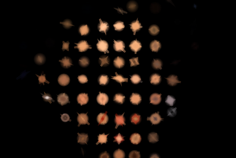
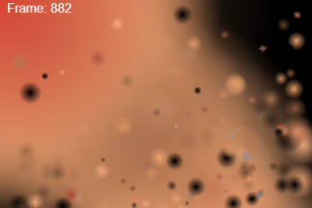
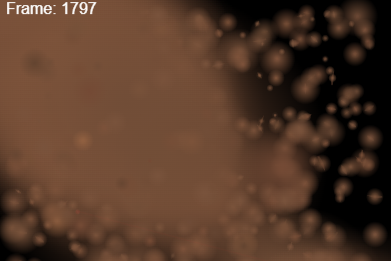
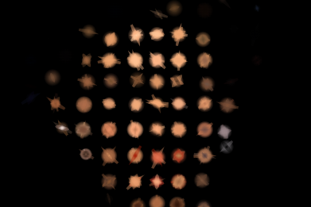
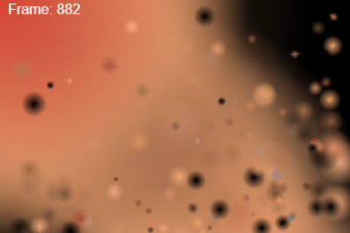
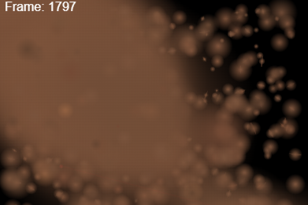

Квантовые портреты
май 2025 — август 2025
«Квантовые портреты» как практика визуальной метафизики
Проект «Квантовые портреты» возник из стремления осмыслить идентичность как динамическую систему, схожую с волновой функцией в квантовой механике. Современный человек существует в цифровых и физических пространствах одновременно, примеряя на себя множество ролей. Как визуально отразить эту текучесть? Квантовая физика — со своими парадоксами и интуитивно непонятной логикой — дала нам язык, чтобы говорить о множественности «я». В проекте каждый пиксель изображения — это квантовый объект, обладающий своим состоянием, которое формируется только при наблюдении, подобно частице в суперпозиции.
Проект визуализирует эту идею через цифровой портрет, который реагирует на действия зрителя, обстановку и случайность. Это не просто изображение человека, а живой визуальный процесс, показывающий, как нас формирует среда, взгляд другого и даже алгоритм. Каждый портрет становится метафорой личности, схлопывающейся в конкретный образ только при взаимодействии, что расширяет границы восприятия субъективности и идентичности.
Процесс создания
Формализация идеи
Теоретическое осмысление началось с метафоры волновой функции как отражения идентичности. Я исследовала литературу по квантовой механике, философии науки и современным теориям субъективности, чтобы обосновать концепцию.
Техническая реализация
Исходное фото преобразуется в пиксельную сетку, где каждому пикселю присваиваются параметры (яркость, цвет, координаты). Используется библиотека QMsolve для упрощённой визуализации волновой функции. Интерактивность реализована на JavaScript с canvas и алгоритмами на Python/Processing. Портрет проходит стадии: от 256×256 пикселей к 16×16 (коллапс), затем частицы флуктуируют, трансформируются и растворяются, порождая новое изображение.
Формы вывода
Проект представлен как интерактивная инсталляция, видеоарт и веб-интерфейс, реагирующий на движение курсора, звуки или внешние данные.


 




